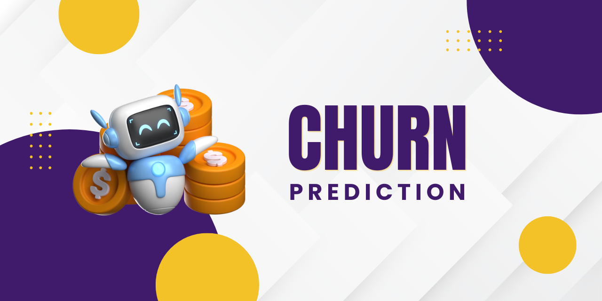
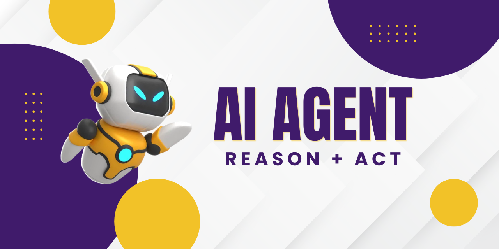
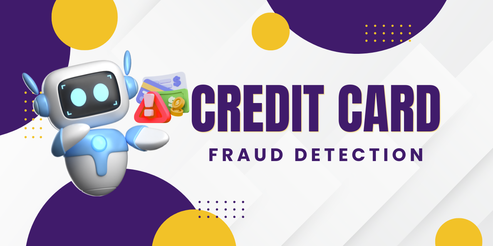
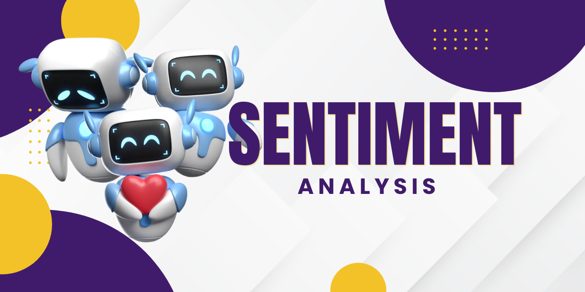

Linguagens de Programação e Banco de Dados
- Python com foco em análise de dados
- Web Scraping com Python
- SQL para extração e manipulação de dados
- R para modelagem estatística
- Banco de Dados SQLite, PostgreSQL, MySQL e MongoDB
Nesta página, eu demonstro minhas habilidades de resolver problemas de negócio utilizando
conceitos e ferramentas da Ciência de Dados.
Você vai encontrar também minhas experiências profissionais, habilidades, ferramentas e
conceitos envolvendo a Ciência de Dados.
Sinta-se à vontade para entrar em contato através dos links no final da página.
Sou formado em Ciência da Computação pela UFPA e Ciência de Dados pela EBAC.
Atualmente, trabalho como estagiário de engenharia de software na Secretaria Estadual de Administração Penitenciária do Pará (SEAP), desenvolvendo soluções em software e trabalhando com projetos pessoais sobre Ciência de Dados, para adquirir experiência na solução de problemas de negócios e domínio de ferramentas e conceitos da análise de dados.
Estou em busca de uma oportunidade de trabalhar profissionalmente como Cientista de Dados para melhorar a tomada de decisão da empresa, através da construção de soluções usando dados.
Abr 2025 - Atual
Jan 2023 - Mar 2025
Fev 2022 - Dez 2022

O Bank Churn Prediction é um projeto de Machine Learning End-to-End desenvolvido para prever o risco de cancelamento de clientes de cartão de crédito. O projeto segue boas práticas de Ciência de Dados e MLOps: pipeline modularizado, otimização de hiperparâmetros com Optuna para o modelo LightGBM, explicabilidade com SHAP, rastreamento de experimentos com MLflow e DagsHub, gerenciamento de dependências com uv e servimento em tempo real via API RESTful com FastAPI.

O ReAct-Travel-Agent é um assistente autônomo de viagens baseado no padrão ReAct (Reason + Act). O sistema interpreta pedidos em linguagem natural, toma decisões em tempo real e executa planos de viagem completos com streaming do processo de pensamento e das ferramentas acionadas em tempo real.

O Credit Card Fraud Detection é um projeto de Machine Learning End-to-End desenvolvido para identificar transações fraudulentas sob cenários de desbalanceamento extremo de classes. O projeto tem pipeline modularizado, pré-processamento cíclico de variáveis temporais e escalonamento robusto (RobustScaler), treinamento e comparação de modelos (Logistic Regression, Random Forest e XGBoost) com ajuste de pesos de classe, rastreamento de experimentos com MLflow e DagsHub, foco na otimização da métrica PR-AUC e gerenciamento de dependências com uv.
Aplicação baseada em IA Generativa e modelos de linguagem (LLMs) para geração automática de roteiros de viagem personalizados. Desenvolvimento de API em Python com FastAPI para geração automatizada dos roteiros; implementação de arquitetura multiagente com CrewAI. Integração de modelos de linguagem via Groq e uso da API Tavily para busca de informações na web.

Aplicação de Processamento de Linguagem Natural (NLP) desenvolvida para identificar e classificar emoções em textos exclusivamente em português. O projeto envolveu web scraping de dados da rede social X (antigo Twitter), desenvolvimento de pipeline de pré-processamento de texto (limpeza, normalização e tokenização) e o treinamento de um modelo de classificação baseado na arquitetura BERT utilizando Python e bibliotecas de ciência de dados.
Sinta-se à vontade para entrar em contato